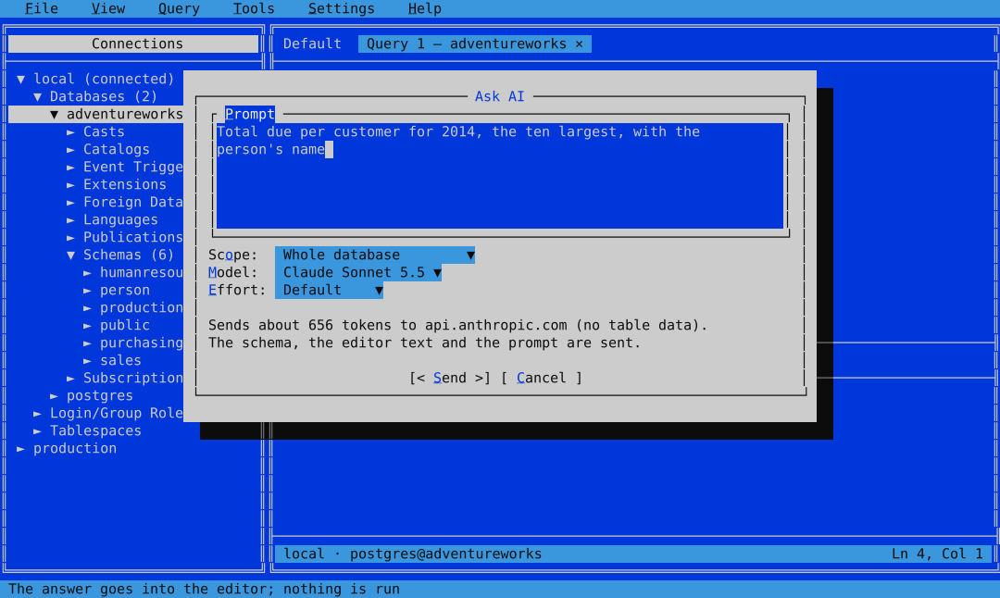
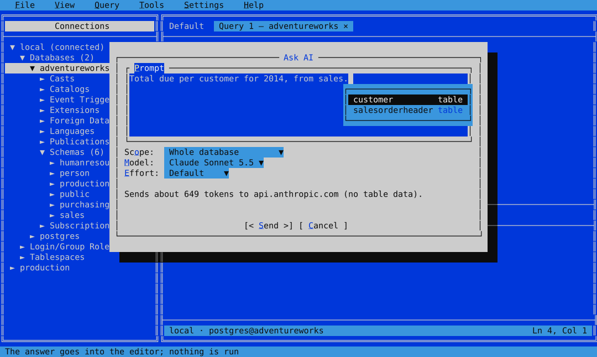
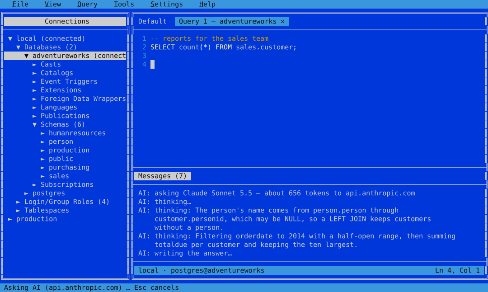

AI assistant
Sends a prompt to a language model with the schema of the tab's database (from the system catalogs, no table data) and the editor text. The answer is inserted into the editor and never executed by pgtc.

Setting it up

| Field | Meaning |
|---|---|
| Enabled | Off: F8 reports AI is not set up; no request is ever made. |
| Preset | Fills in protocol, base URL and model (table below); every field stays editable. |
| Protocol | OpenAI-compatible: POST {base URL}/chat/completions, key as Authorization: Bearer. Anthropic: POST {base URL}/v1/messages, key as x-api-key. |
| Model | The models the provider lists for the key (GET {base URL}/models; Anthropic: /v1/models), read when the dialog opens and after the preset, base URL or key changes. Other… takes a model ID typed by hand. Default model of the F8 dialog. |
| Effort | Default sends no effort parameter. The OpenAI-compatible protocol has three levels (reasoning_effort): Extra high and Max are sent as high. Default effort of the F8 dialog. |
| API key | A saved key shows as ********: leave the stars to keep it, type over them to replace it, delete them to remove it. The key belongs to the saved base URL: another preset or URL empties the field, the saved URL brings the stars back. Empty: no key is sent (local servers). |
- OK also saves the model list — it is what the F8 dialog offers. To pick up new models, open the dialog again and press OK.
- The key is stored in its own file
ai_keyin the config folder (Files and folders), mode0600on Linux and macOS; never insettings.tomlor the log. The other fields are in[ai]ofsettings.toml.
Providers
| Preset | Protocol | Base URL | Key |
|---|---|---|---|
| Claude | Anthropic | https://api.anthropic.com | needed |
| OpenAI | OpenAI-compatible | https://api.openai.com/v1 | needed |
| Grok | OpenAI-compatible | https://api.x.ai/v1 | needed |
| Gemini | OpenAI-compatible | https://generativelanguage.googleapis.com/v1beta/openai | needed |
| Ollama (local) | OpenAI-compatible | http://localhost:11434/v1 | no key |
Any other OpenAI-compatible endpoint: (custom) with its base URL and model. With a local model the schema never leaves the machine.
Asking
F8 in a query tab, or . Refused unless:
- the assistant is enabled and the tab has a session;
- the saved connection is not marked AI not allowed;
- the session is idle — no running statement, no paused result (
1,000+ rows), no export; - no other AI request is pending.
When the dialog opens, pgtc reads the schema with one catalog query on the tab's own session (What is sent).
| Part | Keys | Note |
|---|---|---|
| Prompt | Alt+P | Enter is a new line. In an empty box ↑ / ↓ recall the prompts of this session. An unsent prompt is kept for the next dialog. |
| Scope | Alt+O | Whole database or one schema — a smaller request. |
| Model, Effort | Alt+M, Alt+E | For this request only; the settings are not changed. The list is the one saved in the settings (no network request). |
| Info line | Sends about N tokens to host: the whole request at four characters per token. Above about 100,000 tokens a warning suggests one schema as scope. | |
| Send | Alt+S, Ctrl+Enter | Waits while the catalog query is still running. |
Naming tables and columns: autocomplete

sales.: that schema's objects.From the schema the dialog has read; no further catalog queries.
- Ctrl+Space / Alt+/: schemas, tables, views, functions and types, matched on the unqualified name. Objects are inserted schema-qualified, quoted where needed, whatever the Scope.
- A typed . opens the list by itself: after a schema with its objects, after a table with its columns. Typing words never opens it.
- Enter or Tab inserts; Esc closes only the list. In a list that opened by itself and was not used yet, Enter is a new line (Tab still inserts).
What is sent
One HTTPS request per Send, from pgtc directly to the base URL:
- Server version and database name.
- The schema of the database or of the scope, as compact text, read with one query on
pg_namespace,pg_class,pg_attribute,pg_attrdef,pg_constraint,pg_proc,pg_type/pg_enum:- tables, partitioned tables, views, materialized views, foreign tables: columns with type
(
format_type()),NOT NULL,DEFAULT/ identity / generated clause; PRIMARY KEY,UNIQUE,FOREIGN KEY,CHECK(pg_get_constraintdef());- function and procedure signatures (identity arguments, result type); enum labels;
- comments of relations, columns and functions, one line, truncated to 200 characters.
pg_catalog,information_schema,pg_toast,pg_temp_*; partitions (only the parent); extension members; aggregates and window functions; view definitions, function bodies, indexes, triggers, sequences, privileges. - tables, partitioned tables, views, materialized views, foreign tables: columns with type
(
- The editor text, when not empty; a selection is marked, and the answer replaces it. Above 50,000 characters only the whole lines around the cursor are sent (the dialog says so).
- The prompt, with fixed instructions: PostgreSQL SQL only, valid for that version, explanations as
--comments.
Never sent: rows, result sets, pg_stats, row counts, other databases, roles, connection
parameters other than the database name.
- The provider's certificate is verified against the OS trust store;
HTTPS_PROXYand the system proxy settings are used. - Anthropic protocol: instructions and schema are marked for the prompt cache (
cache_control), so repeated requests with the same scope are cheaper and faster.
Waiting, cancelling, errors
- Esc cancels the request (after closing any open menu, dialog or quick search); a late answer is ignored.
- An error is shown with the provider's own text; the editor is not changed.
- Timeouts: 15 s to connect, 3 minutes without data, 15 minutes for the whole answer.
Progress in Messages

The answer is a server-sent-event stream; its steps are written to the tab's Messages (pgtc does not switch there): the request with model, effort, estimated size and host; thinking… and, where the provider sends them, summaries of the model's thinking; writing… about every 1,500 characters; the token usage the provider reports, including the part served from its prompt cache; and the outcome with the elapsed time. The SQL is inserted only when the answer is complete.
The answer

- Replaces the selection, or is inserted at the cursor on a line of its own, preceded by the prompt as
--comments. - Markdown code fences are removed; text around them becomes comments.
- One undo step removes the whole answer.
- An answer cut off at the model's length limit ends with a comment that says so.
Privacy: AI not allowed
AI not allowed on a saved connection (;
ai_not_allowed = true in settings.toml) refuses F8 in every query tab of that
server, before any catalog query or request. Without it, the schema goes to the provider on every Send.
If it does not work
| Message | Cause and fix |
|---|---|
| HTTP 401 / 403 | No key, a wrong or expired key, or one not allowed to use the model. |
| HTTP 404 / model not found | Wrong base URL, model name or protocol. |
| An error naming effort, output_config or reasoning_effort | The model takes no effort setting: choose Default. |
| HTTP 429 | Rate limit, or no credit left. |
| Could not connect to … | The host of the base URL is unreachable — network, proxy, or a local model server that is not running. |
| -- (the answer was cut off here: it reached the model's length limit) | Ask for less per request. |
| The schema of the database could not be read | The catalog query failed on the tab's session, usually in an aborted transaction (SQLSTATE 25P02): , then F8 again. |